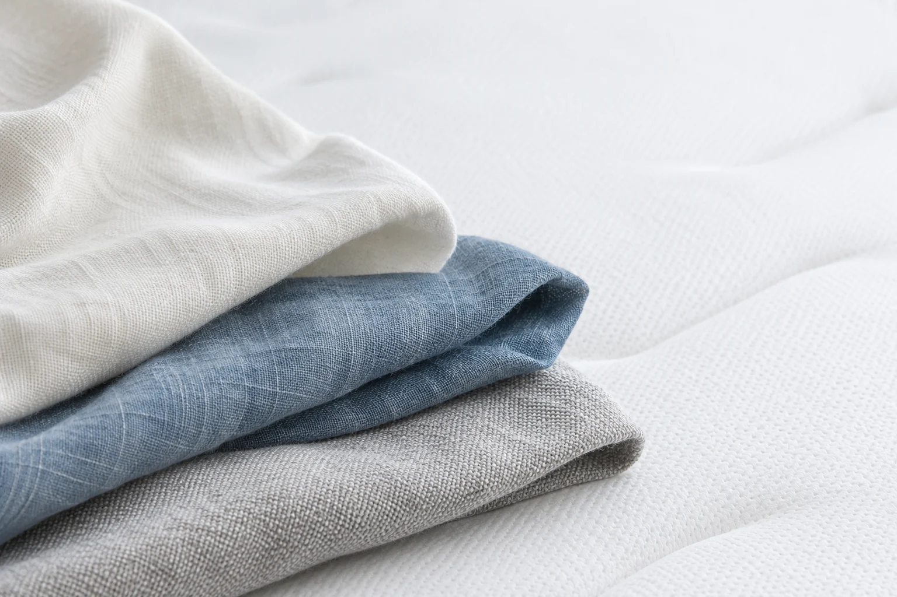
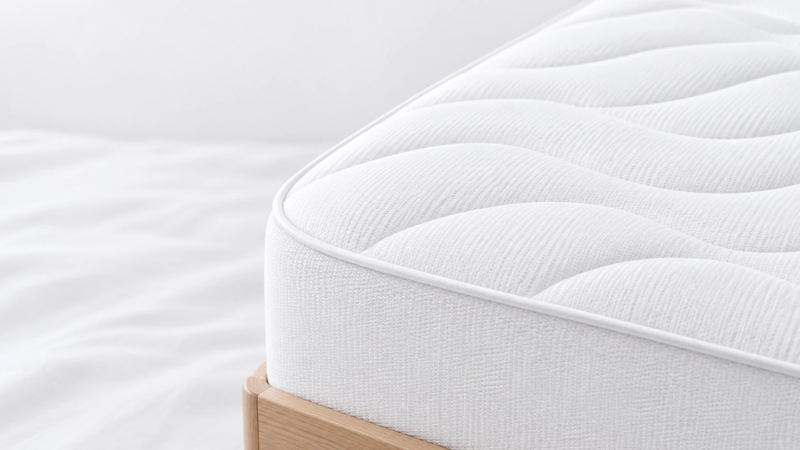
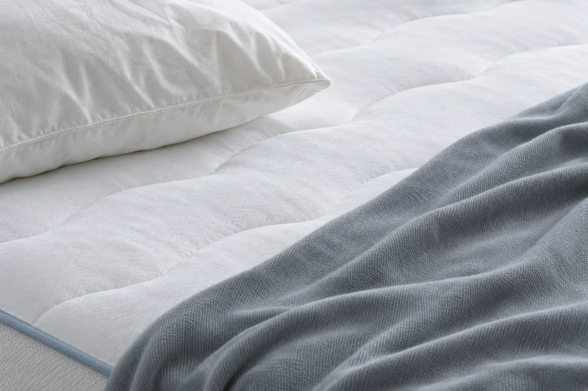

現在這張床，哪裡不習慣？
把感受說具體，先整理自己在意的睡感。
看看挑選重點
選床的起點
睡姿、共同使用的人、床架與空間，都是選床時值得一起考慮的事。
床墊系列
先認識款式外觀，再帶著自己的需求到店比較。
看完整床墊系列到店試躺
把現在的睡感、床架尺寸和預算帶來。選床時，除了躺下，也把每天會做的動作一起考慮。
哪裡太硬、哪裡不習慣，說清楚比較有方向。
躺下、翻身、坐床緣，留意自己的感受。
確認適用尺寸、完整價格、配送與售後條件。

選床知識
記下目前的睡感、慣用睡姿、使用人數、床架內徑與預算。若床架有特殊造型，帶一張照片一起討論。
先把兩人的睡姿與偏好分開說明，再一起試躺。除了躺下，也觀察翻身、上下床與實際可用空間。